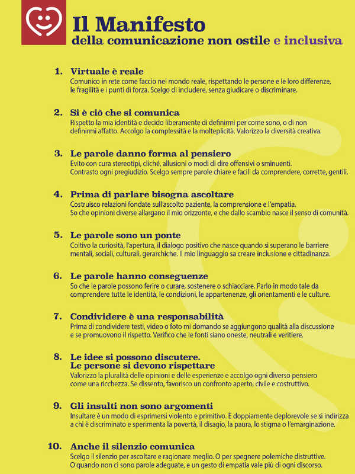

EDUCAZIONE CIVICA
4DI
LORENZO MANGIA, MARCO MARASCO, LORENZO LEGA
I Nostri Servizi
L’intelligenza artificiale (AI) è una tecnologia che consente alle macchine di apprendere, ragionare e prendere decisioni simili agli esseri umani. Viene utilizzata in molti settori, come medicina, sicurezza, educazione e industria. Può migliorare la qualità della vita, automatizzare compiti e fornire soluzioni rapide a problemi complessi. Tuttavia, è importante usarla con responsabilità, perché può comportare rischi come la perdita di posti di lavoro o la diffusione di disinformazione.
La comunicazione non ostile è un modello di comunicazione fondato sul rispetto, sull’ascolto e sull’empatia, che invita a riflettere sull’importanza delle parole. È nata in risposta ai linguaggi aggressivi che troppo spesso si diffondono, in particolare sui social media e nelle piattaforme digitali, ma è applicabile in ogni contesto, sia online che offline. Questo tipo di comunicazione si basa su dieci principi, raccolti nel Manifesto della comunicazione non ostile, che promuovono un uso responsabile e consapevole delle parole. Tra i principi fondamentali ci sono l’importanza di pensare prima di parlare, di scegliere parole precise per esprimere il proprio pensiero e di non attribuire un significato offensivo o distruttivo alla comunicazione. In una società sempre più interconnessa, dove una parola può raggiungere migliaia di persone in pochi secondi, è fondamentale essere consapevoli del potere che essa ha. Le parole possono unire o dividere, costruire o distruggere, includere o escludere. Scegliere di comunicare in modo non ostile significa assumersi la responsabilità del proprio linguaggio e contribuire a un clima sociale più sano e rispettoso. Adottare la comunicazione non ostile è un gesto di civiltà e maturità che può fare la differenza, specialmente tra i giovani e nelle comunità scolastiche e digitali.
Gli haters sono quelle persone che, invece di supportarti o essere positive, si divertono a criticare, insultare o buttarti giù. Spesso lo fanno sui social, dove si nascondono dietro uno schermo. Questi tipi di persone sembrano voler rovinare la giornata a chiunque, per sentirsi superiori o per sfogare frustrazioni. Non sempre hanno un motivo valido per criticare, è solo una questione di negatività. Alla fine, gli haters sono persone che cercano di trascinarti giù perché probabilmente non sono soddisfatti di se stessi. Ignorarli è la scelta migliore.
Testimonianza 1:
"Quando ho postato una foto con un vestito che mi piaceva, subito sono arrivati commenti tipo
'Sei ridicolo' o 'Ma cosa stai facendo?' Non mi conoscevano nemmeno, ma si sono sentiti in
dovere di scrivere per sminuirmi." — Luca, 17 anni
Testimonianza 2:
"Ho iniziato a fare dei video su YouTube e alcuni 'haters' hanno cominciato a insultarmi dicendo
che non ero bravo o che avrei dovuto smettere. All'inizio ci rimanevo male, ma poi ho capito che
erano solo persone che non avevano niente di meglio da fare." — Martina, 17 anni
Chi Siamo
Siamo dei ragazzi di quarto delle scuole superiori, più precisamente dell'istituto tecnico e tecnologico G.Giorgi, facciamo il settore informatico, ci troviamo nella provincia di Brindisi in Puglia; abbiamo deciso di sviluppare questo sito come compito di educazione civica anche per testare le nostre competenze informatiche